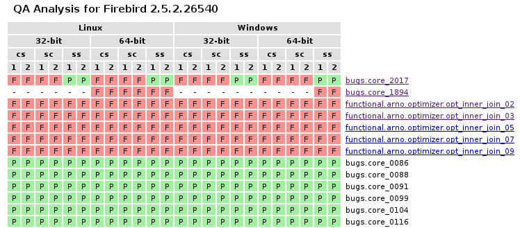

Test Reposotory contains Test definitions, Resource definitions, Databases, Database backups and Other files. Repository is stored in our Subversion repository at SourceForge. You will need a local copy of this repository to run any test. To do that, you can:
a) Create directory where you want it stored, open a command prompt, change to this directory and run next command:
fbt_update repositoryb) Use Subversion client to make a checkout from trunk at central repository into directory where you want it located.
Important
All fbtest command-line tools that work with Test Repository must be run from directory where repository is located.
There are several subdirectories in Test repository:
- resources : Some tests use special resources, for example Firebird user definitions. This directory contains definitions for proper initialization and finalizations of these resources.
- fdb : Contains special pre-made databases that some tests may require.
- fbk : Contains backup files that some tests may require.
- files : Contains other external files (SQL scripts for example) that some tests may require.
- tests : Contains all test definitions structured into suite subdirectories.
- tmp : Location for temporary databases. If it does not exists when fbt_run or fbt_server is executed, it’s automatically created with full access rights for everyone.
Important
Tested Firebird server must be able to access databases in fdb directory, otherwise all tests that depend on them will fail.
Test Environment consists from Test Repository, Firebird client library and Firebird command-line tools. You don’t need any additional configuration if you want to run tests against current Firebird installation. However, if you want to test another Firebird installation (if you have multiple Firebird installations), you have to make sure that fbtest will use Firebird client library and command-line tools from tested Firebird installation. Scripts that work with Firebird (fbt_run and fbt_server) have a command-line switch to specificy a directory where Firebird command-line tools are located. However, current implementation doesn’t allow to specify alternative Firebird client library, so it’s your responsibility to make sure that correct client library is located on system path.
You can run tests against local or remote Firebird installation. However, when you want to run tests against remote Firebird server, you still need locally installed (or accessible) Firebird client library and command-line tools that match the tested server.
Each test is designed to test only specific Firebird feature or bug fix. Tests are grouped into logical groups called suites, and these suites could be nested. Each test and suite has a name. To identify test or suite, you have to use fully qualified name that consists from all parent suite names plus test or suite name in a row, separated by dot. For example, fully qualified name for test named “isql_01” in suite “isql” that’s part of suite “basic” which is part of “functional” suite is “functional.basic.isql.isql_01”.
Note
Definition of each test is stored in Test Repository as single text file with ”.fbt” extension. Each suite is represented as directory and directory tree represents the suite nesting structure.
Important
Current implementation doesn’t allow free test file relocation between directories (suites) without adjustments in each moved test definition.
Single test run may run all tests in Test Repository or single test/suite. Running test suite means that all test and sub-suites in it are executed.
Note
All tests are designed to work with specific version(s) of Firebird server. Each test contains one or more “recipes” - how to execute and evaluate test when run in specific conditions (platform and/or Firebird version). If test doesn’t contain recipe for actual conditions, it’s not executed, which is not considered as bug or problem because it means that test was simply not designed to work in these conditions.
Tests are run using fdb_run script.
Usage:
fbt_run [-h] [-b BIN_DIR] [-d DB_DIR] [--archive] [--rerun] [-v]
[--verbosity {0,1,2}] [-q] [-x] [--remote] [-u] [-w PASSWORD]
[-o HOST] [-p PERSON] [-a ARCH] [-s SEQUENCE] [-k SKIP]
[name]
positional arguments:
name Suite or test name
optional arguments:
-h, --help show this help message and exit
-b BIN_DIR, --bin-dir BIN_DIR
Directory where Firebird binaries tools are
-d DB_DIR, --db-dir DB_DIR
Directory to use for test databases
--archive Save last run results to archive
--rerun Run only tests that don't PASSed in last run
-v, --verbose Be more verbose
--verbosity {0,1,2} Set verbosity; --verbosity=2 is the same as -v
-q, --quiet Be less verbose
-x, --xunit Provides test results also in the standard XUnit XML
format
-e FILENAME, --expect FILENAME
Test results file to be used as expeted outcomes
--remote Connect to remote fbtest server
-u, --update Update last run results with re-run results
-w PASSWORD, --password PASSWORD
SYSDBA password
-o HOST, --host HOST Remote Firebird or fbtest host machine identification
-p PERSON, --person PERSON
QA person name
-a ARCH, --arch ARCH Firebird architecture: SS, CS, SC
-s SEQUENCE, --sequence SEQUENCE
Run sequence number for this target
-k SKIP, --skip SKIP Suite or test name or name of file with suite/test
names to skip
This tool runs all or specified set of tests and collects run result from each test. This result for whole run is saved to results.trf file in Test Repository for later reference.
During execution fbt_run gives feedback to standard output about progress in usual way for unit test programs, including summary report.
In normal verbosity mode fbt_run prints a dot for each passed test, or letter indicating detected problem: ‘F’ for FAIL, ‘E’ for ERROR and ‘U’ for UNTESTED.
Examples:
>fbt_run functional.basic.isql
...
----------------------------------------------------------------------
Ran 3 tests in 0.918s
OK
>fbt_run functional.basic.isql
.F.
======================================================================
FAIL: functional.basic.isql.isql_01
----------------------------------------------------------------------
Expected standard output from ISQL does not match actual output.
----------------------------------------------------------------------
Ran 3 tests in 0.949s
FAILED (fails=1)
You may increase or decrease the amount of information printed using –verbose, –quiet and –verbosity options.
Example output for verbose mode:
>fbt_run -v functional.basic.isql
functional.basic.isql.isql_03 ... ok
functional.basic.isql.isql_01 ... ok
functional.basic.isql.isql_02 ... ok
----------------------------------------------------------------------
Ran 3 tests in 0.939s
OK
>fbt_run -v functional.basic.isql
functional.basic.isql.isql_03 ... ok
functional.basic.isql.isql_01 ... FAIL
functional.basic.isql.isql_02 ... ok
======================================================================
FAIL: functional.basic.isql.isql_01
----------------------------------------------------------------------
Expected standard output from ISQL does not match actual output.
----------------------------------------------------------------------
Ran 3 tests in 0.922s
FAILED (fails=1)
Example output for quiet mode:
>fbt_run -q functional.basic.isql
----------------------------------------------------------------------
Ran 3 tests in 0.925s
OK
>fbt_run -q functional.basic.isql
======================================================================
FAIL: functional.basic.isql.isql_01
----------------------------------------------------------------------
Expected standard output from ISQL does not match actual output.
----------------------------------------------------------------------
Ran 3 tests in 0.933s
FAILED (fails=1)
Tip
You may get more detailed information about run results using fbt_view and fbt_analyze.
There is no need to use any additional command-line options for quick execution of all or selected test(s) against current Firebird installation. However, you would need to specify some additional options in other cases:
Important
If your test environment is not properly configured, many (if not all) tests would fail or raise errors, which would spoil the test run results. For example if Firebird engine wouldn’t have sufficient rights to create/access databases in location for temporary databases, almost every test would fail as most of them use temporary databases.
Tip
Test Repository contains test named check that you could run to verify that your test environment is correctly configured before you’ll run the whole test series.
Sometimes you may need to run tests on remote Firebird server, for example to test Firebird on different platform than is your primary platform. While you may use local fbtest installation to run against remote Firebird, it could be better (and easier to configure) to install fbtest also on remote machine and operate it from your workstation almost like it would be all installed locally.
Before your can connect to remote fbtest, you have to run it in “server” mode. To do that, run fbt_server on remote machine.
fbt_server accepts command-line options --bin-dir, --db-dir, --password, --host, --arch and --person that have the same function like fbt_run options with the same name.
Normally fbtest server listens on port 18861 and clients must know on which host it runs to contact him. Alternatively fbtest server could anounce itself on network via remote service registry. To use this mode you must start it with --register option.
Once remote fbtest server is up and running, you may use fbt_run to use it as test execution engine, i.e. all tests are executed by remote server on server host, but all output is produced on client side (console output and results.trf file).
To use remote fbtest, execute fbt_run with --remote option. If fbtest server is NOT started with --register, you must also specify host machine using --host option.
When remote fbtest engine is used, --bin-dir, --db-dir and --password options are ignored when specified.
Note
Note that --host option has different meaning when used together with –remote.
Warning
Do NOT operate fbtest server on open network! Current implementation gives full control to clients over it, which is potential security risk.
Remote fbtest server is also used by Test editor to execute tests on other platforms than Windows.
When test execution doesn’t end with success, you need to investigate why did that happen, because fbt_run gives only basic information: test run outcome and cause of failure if test didn’t passed. However, test run result information (stored in results.trf) contains all details including analytical information. You may inspect these information using fbt_view tool, or generate detailed HTML report using fbt_analyze tool, which can also compare results from multiple runs.
Test run may end in four different ways:
| PASS: | Everything went just fine. |
|---|---|
| FAIL: | Test executed correctly, but actual outcome does not match expected one. |
| ERROR: | An error (exception) occured during test execution. |
| UNTESTED: | Test couldn’t be executed because some condition wasn’t met (typically setup of required resource failed). |
Failure (or error) cause reported by fbtest explains in short why fbtest decided about test run outcome.
Example causes:
Expected standard output from ISQL does not match actual output.
Test setup: Exception raised while creating database.
Reported cause isn’t automatically the real reason (problem source).
FAILure could signal a real problem (functionality was broken) or could be a “false positive” (change was intentional), and requires further analysis to determine which case it is. The quickest way is to examine difference between expectet test output and real output using fbt_view tool.
ERROR is typically an outcome of bad setup of your test environment, but sometimes it could also signal a real problem (functionality was broken). The quickest way to see all details about error is using fbt_view tool.
This tool displays information from run result (.trf) files. It can also create XUnit XML run result reports.
Usage:
fbt_view [-h] [-x] [-c] [-d] [name]
positional arguments:
name Results file or directory with result files
optional arguments:
-h, --help show this help message and exit
-x, --xunit Save test results in the standard XUnit XML format
-c, --cause Print cause of fails and errors.
-d, --details Print details for fails and errors.
Note
fbt_view works with run result files only and thus coud be run from any directory.
Note
Without parameters or options fbt_view shows summary information for all run results files in working directory.
Example output:
>fbt_view
File: results.trf
Desc: Linux64 SS
Version: 2.5.2.26540
Arch: SS
Platform: Linux
CPU: 64
Sequence: 1
Person: pcisar (PC)
Passes: 2
Fails: 1
Errors: 0
Untested: 0
=== FAILS ============================================================
functional.basic.isql.isql_01
To see also causes use --cause option:
>fbt_view --cause
File: results.trf
Desc: Linux64 SS
Version: 2.5.2.26540
Arch: SS
Platform: Linux
CPU: 64
Sequence: 1
Person: pcisar (PC)
Passes: 2
Fails: 1
Errors: 0
Untested: 0
=== FAILS ============================================================
functional.basic.isql.isql_01
Expected standard output from ISQL does not match actual output.
To see details why tests didn’t passed use --details option. For FAIL outcome it shows difference (in standard diff format) between expected and actual outputs:
>fbt_view --details
File: results.trf
Desc: Linux64 SS
Version: 2.5.2.26540
Arch: SS
Platform: Linux
CPU: 64
Sequence: 1
Person: pcisar (PC)
Passes: 2
Fails: 1
Errors: 0
Untested: 0
=== FAILS ============================================================
functional.basic.isql.isql_01
----------------------------------------------------------------------
ISQL_stripped_diff:
Owner: SYSDBA
PAGE_SIZE 4096
Number of DB pages allocated = 165
Sweep interval = 20000
Forced Writes are ON
- ODS = 11.22
? -
+ ODS = 11.2
Default Character set: NONE
For ERROR it shows detailed error information:
>fbt_view --details
File: results.trf
Desc: Linux64 SS
Version: 2.5.2.26540
Arch: SS
Platform: Linux
CPU: 64
Sequence: 1
Person: pcisar (PC)
Passes: 0
Fails: 0
Errors: 1
Untested: 0
=== ERRORS ===========================================================
functional.basic.isql.isql_01
----------------------------------------------------------------------
exception:
ProgrammingError:
Error while creating database:
- SQLCODE: -902
- I/O error during "open O_CREAT" operation for file "/home/job/fbtrepo/tmp/functional.basic.isql.isql_02.fdb"
- Error while trying to create file
- Permission denied
-902
335544344
----------------------------------------------------------------------
db_unable_to_create:
localhost:/home/job/fbtrepo/tmp/functional.basic.isql.isql_01.fdb
----------------------------------------------------------------------
traceback:
File "/home/job/python/envs/pyfirebird/fbtest/fbtest.py", line 635, in run
conn = kdb.create_database(createCommand, self.sql_dialect)
File "/home/job/python/envs/pyfirebird/fdb/fdb/fbcore.py", line 704, in create_database
"Error while creating database:")
This tool analyzes run results file(s) and produces colored HTML report.
Usage:
fbt_analyze [-h] [-o OUTPUT] [name]
positional arguments:
name Results file or directory with result files
optional arguments:
-h, --help show this help message and exit
-o OUTPUT, --output OUTPUT
Analysis output directory
-d, --diffs-only Show only diffs on detail pages
Reports consists from summary page (index.html) and detail pages for each test that didn’t passed.
Example summary page:
As you can see, summary is presented as table with row for each test and column for each input results file. Table cells contain test run outcome for each run. Columns are sorted and grouped by platform, CPU, Firebird architecture and test run sequence number.
Important
If you want to compare results from several test runs, you must specify --sequence option to fbt_run. Similarly you have to specify --arch option to compare results from multiple Firebird architectures. If you forgot to do so, you can add/change this information to results file later using fbt_update.
Tip
You can verify platform, CPU, Firebird architecture and run sequence number values stored in result file using fbt_view.
Detail page contains all informations related to test run recorded by fbtest from all result files where test doesn’t passed. Information is “grouped” by result file so only unique content is included.
Collected information for failed tests contains expected and actual outputs and their difference (in human-readable diff format). If you are interested to see only diffs, use --diffs-only option.
Note
fbt_analyze works with run result files only and thus coud be run from any directory.
Note
Without parameters or options fbt_analyze processes all run results files and produces HTML report in current working directory.
This tools has two purposes:
- Updates local Test Repository from central Subversion repository.
- Updates meta-information in test run results file(s).
Usage:
fbt_update [-h] {result,repository} ...
optional arguments:
-h, --help show this help message and exit
Commands:
{result,repository} Use <command> --help for more information about command.
result Change result file metadata.
repository Update test repository.
fbt_update repository [-h]
Update local test repository from Firebird project Subversion repository.
optional arguments:
-h, --help show this help message and exit
fbt_update result [-h] [-a ARCH] [-p PERSON] [-s SEQUENCE] [name]
Changes metadata of result file(s).
positional arguments:
name Results file or directory with result files
optional arguments:
-h, --help show this help message and exit
-a ARCH, --arch ARCH Update result(s): set ARCH
-p PERSON, --person PERSON
Update result(s): set PERSON
-s SEQUENCE, --sequence SEQUENCE
Update result(s): set SEQUENCE NUMBER
fbtest provides simple archive for test run results files. When you specify --archive option to fbt_run, run results file results.trf is also copied to archive in Test Repository (stored in subdirectory “archive”) in subdirectory named as tested Firebird version number and filename that identifies run conditions:
For example 3 tests run on 64-bit Linux Firebird v2.5.2.26540 SuperServer by pcisar without sequence number will be stored in 2.5.2.26540/0003-Linux64-SS-PC1.trf.
Note
If filename already exists in archive, it’s replaced with new one.
While you can work with archived results files directly, fbtest also provides separate tool fbt_archive to list, save, retrieve or delete archived results. This is particularly useful when you’re working with remote fbtest installation.
Usage:
fbt_archive [-h] [--remote] [-o HOST] {list,save,retrieve,delete} ...
optional arguments:
-h, --help show this help message and exit
--remote Connect to remote fbtest server
-o HOST, --host HOST Remote fbtest host machine identification
Commands:
{list,save,retrieve,delete}
Use <command> --help for more information about command.
list List result(s) in archive.
save Save result(s) to archive.
retrieve Retrieve result(s) from archive.
delete Delete result(s) from archive.
Usage:
fbt_archive list [-h]
List result(s) in archive.
optional arguments:
-h, --help show this help message and exit
Example:
>fbt_archive list
Files in archive:
2.1.5.18497:
0681-Linux64-CS-PC1.trf
0681-Linux64-CS-PC2.trf
0681-Linux64-SS-PC1.trf
0681-Linux64-SS-PC2.trf
2.5.2.26539:
0003-Linux64-SS-XX1.trf
0003-Linux64-SS-XX2.trf
0824-Linux64-SS-PC1.trf
2.5.2.26540:
0003-Linux64-SS-XX1.trf
0823-Linux64-SC-PC2.trf
0824-Linux64-CS-PC1.trf
0824-Linux64-CS-PC2.trf
0824-Linux64-SC-PC1.trf
0824-Linux64-SS-PC1.trf
0824-Linux64-SS-PC2.trf
Usage:
fbt_archive save [-h] [name]
Save result(s) to archive.
positional arguments:
name Results file
optional arguments:
-h, --help show this help message and exit
When filename is not specified, file results.trf in current directory is copied.
Example:
>fbt_archive save
Results file 'results.trf' stored into archive as '2.5.2.26540/0003-Linux64-SS-XX1.trf'
Usage:
fbt_archive retrieve [-h] [-v VERSION] [-c] [-o OUTPUT] [-a ARCH] [-p PERSON] [-s SEQUENCE]
Retrieve result(s) from archive.
optional arguments:
-h, --help show this help message and exit
-v VERSION, --version VERSION
Only specified Firebird version
-c, --current Only currently tested Firebird version
-o OUTPUT, --output OUTPUT
Output directory
-a ARCH, --arch ARCH Firebird architecture: SS, CS, SC
-p PERSON, --person PERSON
QA person name
-s SEQUENCE, --sequence SEQUENCE
Run sequence number
This command copies all archived results files for specified or currently tested Firebird version (either --version or --current option is required) from archive to specified or current working directory. It’s possible to specify additional conditions for Firebird architecture, QA person or run sequence number that must be met.
Examples:
>fbt_archive retrieve --current
Current version: 2.5.2.26540
0003-Linux64-SS-XX1.trf retrieved.
0823-Linux64-SC-PC2.trf retrieved.
0824-Linux64-CS-PC1.trf retrieved.
0824-Linux64-CS-PC2.trf retrieved.
0824-Linux64-SC-PC1.trf retrieved.
0824-Linux64-SS-PC1.trf retrieved.
0824-Linux64-SS-PC2.trf retrieved.
>fbt_archive --remote retrieve --version=2.1.5.18497 -a SS
0681-Linux64-SS-PC1.trf retrieved.
0681-Linux64-SS-PC2.trf retrieved.
This command deletes all archived results files for specified or currently tested Firebird version (either --version or --current option is required) from archive. It’s possible to specify additional conditions for Firebird architecture, QA person or run sequence number that must be met.
Usage:
fbt_archive delete [-h] [-v VERSION] [-c] [-a ARCH] [-p PERSON] [-s SEQUENCE]
Delete result(s) from archive.
optional arguments:
-h, --help show this help message and exit
-v VERSION, --version VERSION
Only specified Firebird version
-c, --current Only currently tested Firebird version
-a ARCH, --arch ARCH Firebird architecture: SS, CS, SC
-p PERSON, --person PERSON
QA person name
-s SEQUENCE, --sequence SEQUENCE
Run sequence number
Examples:
>fbt_archive delete --current -a SS -s 2
Current version: 2.5.2.26540
0824-Linux64-SS-PC2.trf deleted.
>fbt_archive --remote delete --version=2.1.5.18497 -a SS
0681-Linux64-SS-PC1.trf deleted.
0681-Linux64-SS-PC2.trf deleted.